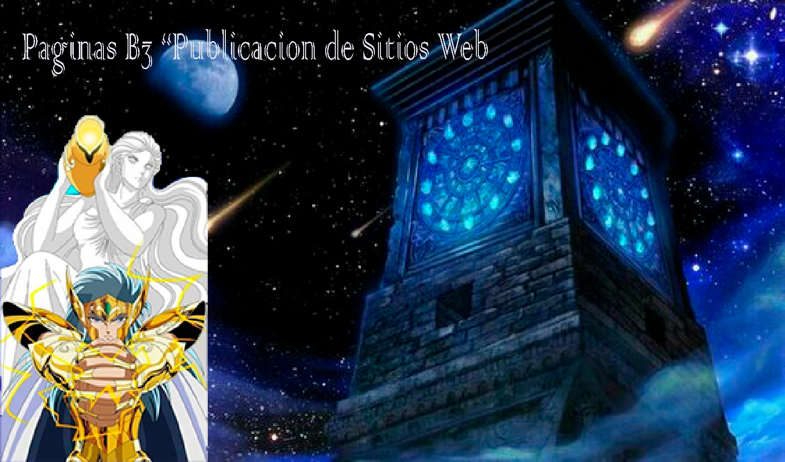
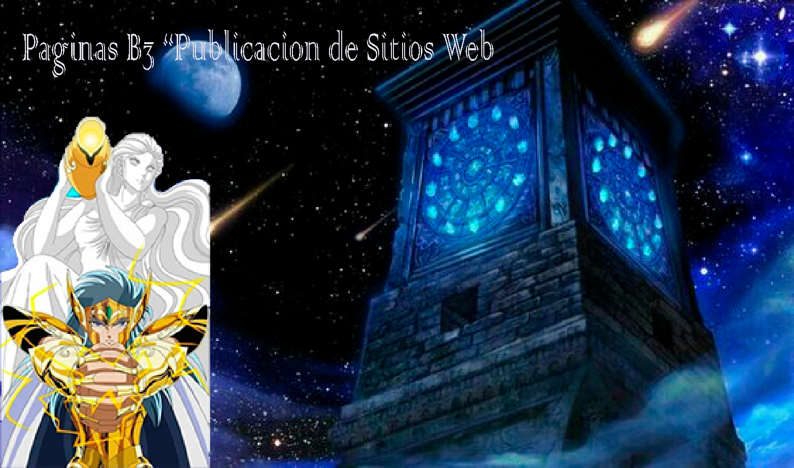
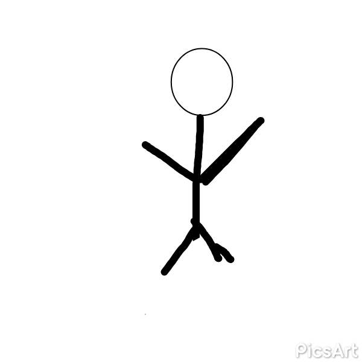
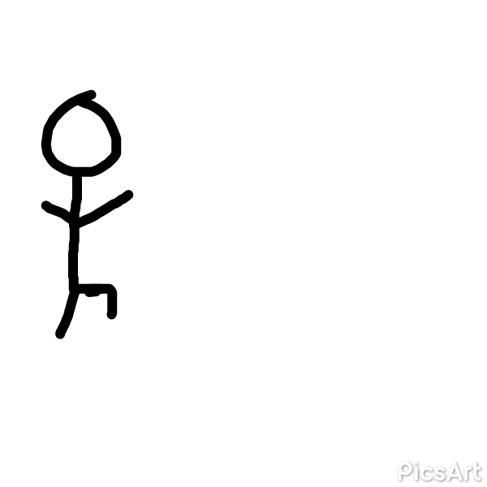
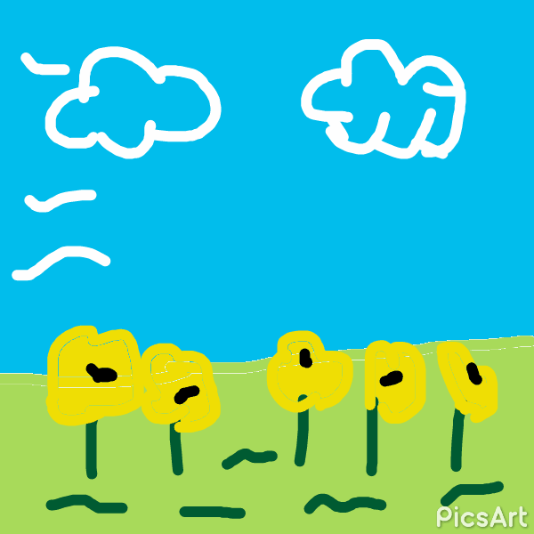
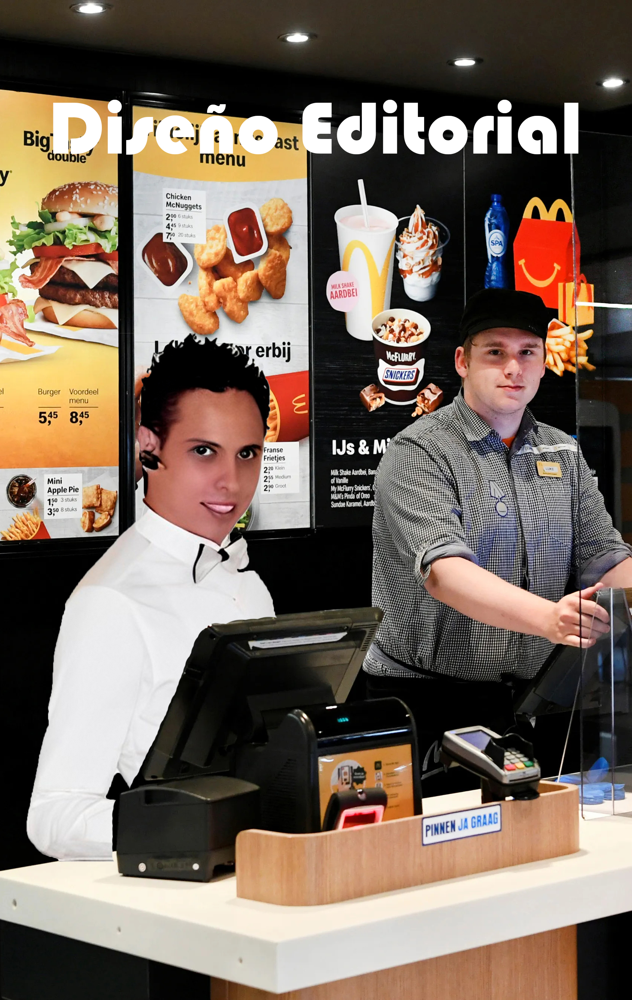
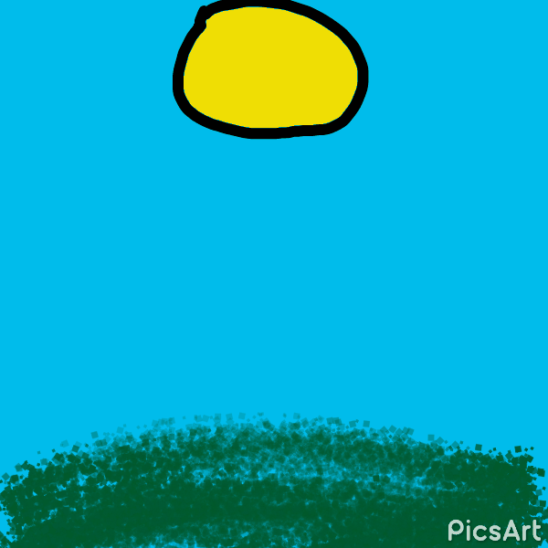
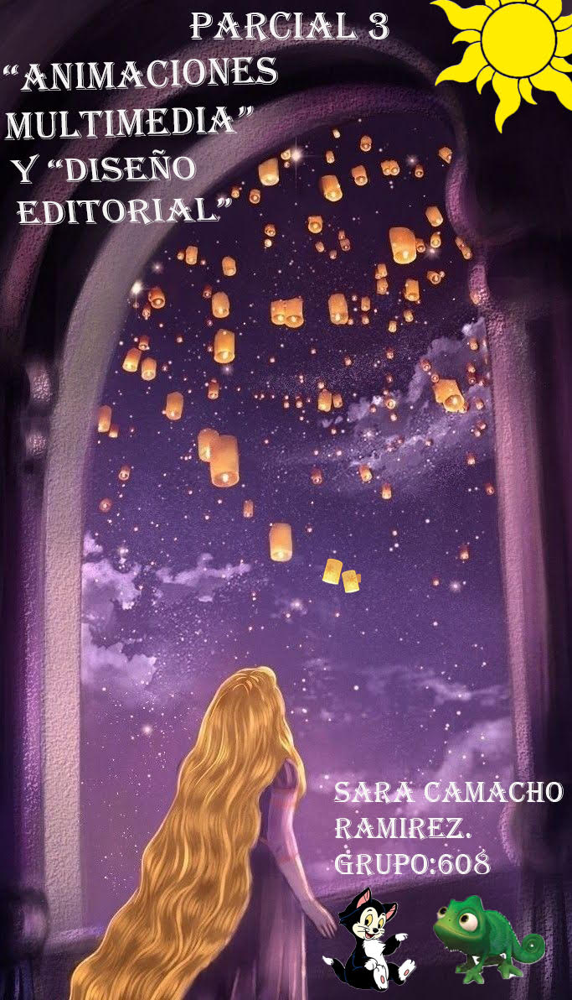
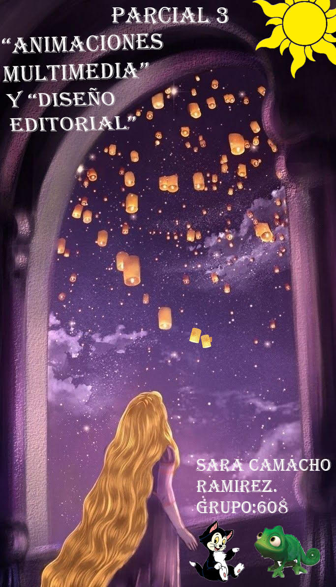
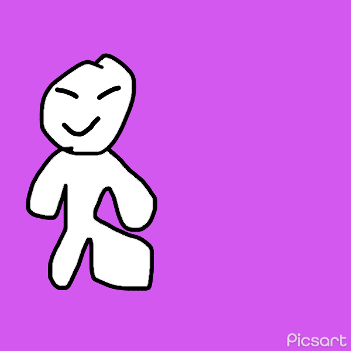

Grand Thef Auto V
Online
Grand Theft Auto Online, comúnmente abreviado como GTA Online, es un modo multijugador en línea de la saga Grand Theft Auto, estando incluido junto con el Grand Theft Auto V. Su lanzamiento se llevó a cabo el día 1 de octubre del año 2013, catorce días luego de Grand Theft Auto V fuera lanzado. Para acceder a GTA Online por primera vez, es necesario completar el prólogo de Grand Theft Auto V.
El juego se desarrolla antes y después de los eventos de Grand Theft Auto V, con todas las actualizaciones de contenido desde Playero a Cunning Stunts: Circuito especial teniendo lugar en 2013 (antes de los eventos de GTA V), y todas las actualizaciones desde Tráfico de armas en adelante teniendo lugar en sus respectivos años de lanzamiento.
El acceso a los servidores de GTA Online en las versiones de PlayStation 3 y Xbox 360 finalizó el 16 de diciembre del 2021.
Las versiones de PlayStation 5 y Xbox Series X/S cuentan con una versión independiente, haciendo que ya no se necesite de Grand Theft Auto V.
Descripción modo Online:
El personaje creado por el jugador llega a Los Santos (V) luego de que conoce a Lamar Davis por LifeInvader y este le comenta que Los Santos es una gran ciudad, por lo que el personaje viaja hacia allí (desde alguna ciudad desconocida), conoce a Lamar y empieza a realizar encargos para este y otros contactos que va conociendo (presentados por el mismo Lamar o gracias a la reputación que adquiere el jugador). Los acontecimientos de esta entrega ocurren poco antes de los hechos de Grand Theft Auto V, por lo que veremos algunas caras conocidas como a Trevor Philips, Ron Jakowski, Simeon Yetarian, Lamar Davis, Dom Beasley, Lester Crest y Martín Madrazo. También habrá otros personajes que no aparecen en la entrega original, como es el caso de Gerald y de Brucie Kibbutz, que era un personaje principal en Grand Theft Auto IV.
Grand Theft Auto Online posee muy variadas opciones de juego. Los jugadores ingresan en una clasificación en base a la cantidad de puede (del inglés os mediante el éxito , que traducido al español significa ealización de actividade). Los RP pueden ser obtenidos mediante el éxito de misiones y actividades, o con la realización de actividades secundarias.
Personalización:
Personaje
El personaje controlado por el jugador puede ser modificado, ya sea cambiando su tono de piel, su corte de cabello, el color de su cabellera, sus prendas de ropa individuales; y agregando accesorios menores, tales como relojes, lentes y collares.
Vehiculos
Los coches, camionetas y motocicletas podrán ser modificados con varios factores, entre los que se encuentran cambiar su capa de pintura, cambiar sus neumáticos, rines, agregar turbo, suspensión hidráulica, alerones y parachoques. Por otro lado, es posible que el jugador también pueda modificar el color del vidrio parabrisas, la forma y el color de vinilos, los parachoques delanteros y traseros; y el color de los rines.
Paginas de las cuales puedes comprar onjetos para usar en el juego:
Elitastravel.com es un vendedor de helicópteros y jets privados de lujo de San Andreas. Sus vehículos están pensados para la diversión y para el transporte, por lo que no están equipados con armas. Visita su sitio web desde el navegador de tu teléfono para comprar tu propio transporte aéreo privado hoy mismo. |
|
Visita legendarymotorsport.net desde el navegador de tu teléfono para descubrir los vehículos de lujo más exclusivos a tu disposición. |
|
Visita el sitio web Warstock-cache-and-carry.com desde el navegador de tu teléfono para descubrir su gama de vehículos de combate terrestres y aéreos. |
|
Si quieres comprar un barco de lujo (o tu propia Seashark), visita Docktease.com desde el navegador de tu teléfono para consultar su gama. |
|
Pedal and Metal Cycles cuenta con una pequeña pero variada selección de bicicletas. Visita pandmcycles.com desde el navegador de tu teléfono para descubrir su gama. |
|
Visita Southernsanandreassuperautos.com desde el navegador de tu teléfono para consultar sus existencias de motos y coches prácticos y de calidad. |
|
La introducción de Benny's original Motor Works, una nueva tienda de customizacion en el centro de Strawberry que ofrece una amplia gama de personalizaciones lowrider que pueden convertir su junker clásico en una alta especificación, engañado fuera rey de las calles." |
|
Compra vehículos listos para usar en la Arena de Motores. |
Modos de juego:
Carreras:
En GTA Online existen una gran diversidad de carreras, de distintos estilos y categorías. Existen seis tipos de carreras: terrestres, aéreas, marítimas, de bicicletas, acrobáticas y de ataque al objetivo.
Supervivencia
Este modo de juego se desbloquea cuando llegas al nivel 15 y visitas el hogar de Trevor, este modo puede ser jugado por 1 a 4 jugadores, los cuales tendrán que sobrevivir 10 oleadas de enemigos, una mas difícil que la anterior, un jugador solo tiene una vida por cada oleada.
Misiones
Existen 2 tipos de Misiones para hacer cada una puede variar su dificultad con respecto a la otra:
-Misiones de contacto: Son misiones otorgadas por personajes de GTA V como Lamar o Simeon Yetarian o de añadidos nuevos como Gerald. Como mas nivel se tenga, mas difíciles pero mejores recompensas habra. Suelen ser de 1 a 4 jugadores pero hay de solo 2, y hasta 6.
-Misiones Versus: Las misiones versus son un tipo de actividad que ofrece Grand Theft Auto Online en las que 2 o más equipos compiten por completar un objetivo, por ejemplo, un equipo debe coger un paquete y entregarlo, pues el otro equipo tiene que evitar que se entregue.
Modos Adversario
Al igual que las misiones versus normales, los modos Adversario consisten en partidas competitivas entre múltiples equipos. La diferencia radica en que los desafíos propuestos son más complejos que en misiones versus normales: dichos desafíos van desde grupos colaborando para atacar en conjunto, hasta jugadores en solitario intentado salir victoriosos. Con el transcurrir de las rondas, los roles de algunos participantes pueden verse intercambiados. Al ser disputada por equipos cambiantes, la partida resulta ganada por el grupo al que pertenezca primer jugador en lograr conseguir la cantidad de rondas necesarias para la victoria.
Teléfono
El teléfono móvil contiene una lista de actividades que se irá actualizando constantemente. Puede ser utilizado por el jugador para llamar a otros jugadores por teléfono, ya sea seleccionando el gamertag/ID de PlayStation®Network de una amistad y seleccionando "Llamar", algo raro es que no se muestra en la mano del jugador pero si en pantalla esto no ocurre en modo historia
Curiosidades
-Los cambios ambientales ocurridos a lo largo de la trama de Grand Theft Auto V no estarán presentes en el mapa de GTA Online debido a que, como se explicó antes, la trama ocurre antes de los hechos de GTA V. Aún así, la mención de que en GTA Online: Tráfico de Armas de que están en el 2017, ha generado muchas confusiones y teoría durante el tiempo.
-La actualización de Golpes es la más grande en las versiones originales.
Integrantes
(Dar click en cada nombre para ver los trabajos)
 _

_


_

 _
_
_

 _
_
_
 _
_
.gif)

(1).gif)